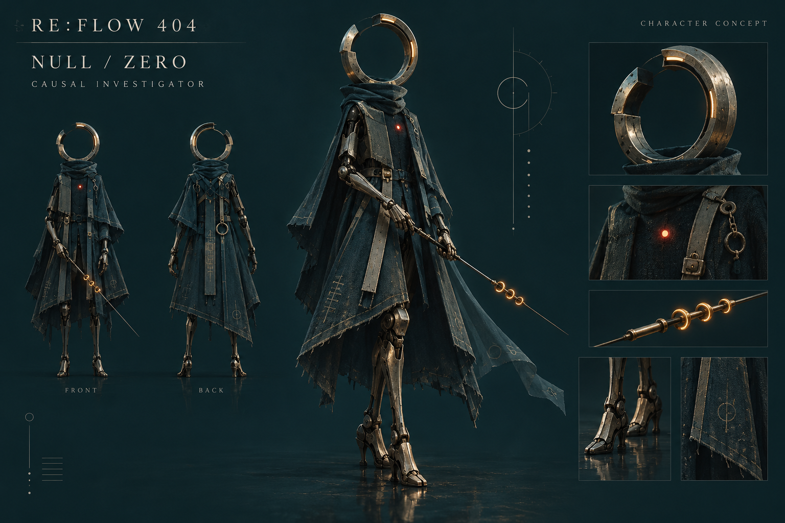

零号NULL / ZERO
“系统找不到，不代表不存在。”
一名被判定为异常的城市残留体，拿起因果织针，把那些被跳过的人重新接回世界。

它是谁
没有身份记录，没有可以返回的地址。唯一的能力，是听见世界尚未完成的事件。它帮助 MIRA 找回 B 站，也逐渐证明自己的存在。
它的轮廓
上方留有缺口的空心圆环；轻型钛合金外骨骼；深青织物披风；胸前唯一一枚朱红句点。没有脸，依然会犹豫、停顿和回头。
它手中的工具
三枚琥珀指环组成因果织针。扫描揭开轨迹，断点为思考留下时间，重连改写未来，最后用世界的真实执行结果证明它。